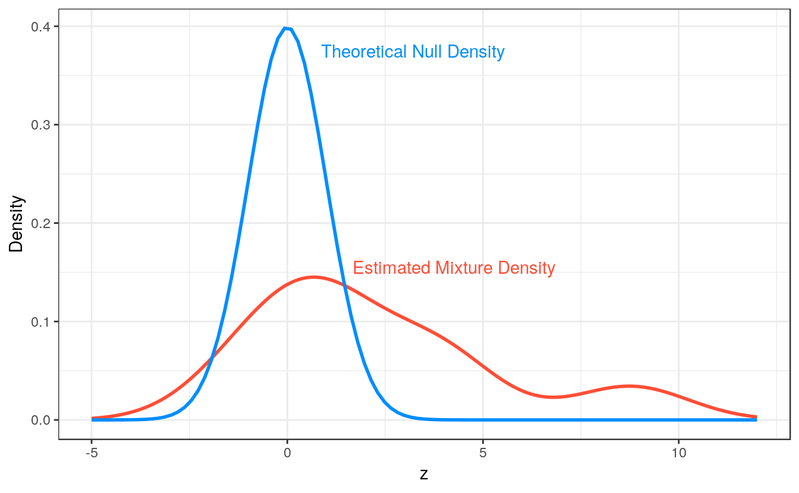

vignettes/web/inference-local.rmd
inference-local.rmdClassical, single-feature, hypothesis testing approaches rely upon tail-area probabilies, or the probability that a test statistic, \(z\), exceeds a certain value. In contrast, local approaches like local mfdr base inference on that feature’s specific value value of \(z\) without considering the hypothetical possibility of more extreme results.
Local false discovery rates are a Bayesian idea that can be implemented in large-scale testing situations by using empirical Bayes methods to obtain estimates of: \[ Pr(H_{0j} | z_j = z)\]
The probability of the \(j^{th}\) null hypothesis being true, conditional upon the exact value of the observed test statistic \(z_j\). This probability is defined as the local false discovery rate for the \(j^{th}\) feature.
Using Bayes’ rule, we have
\[Pr(H_{0j} | z_j = z) = \frac{\pi_0 f_0(z)}{\pi_0f_0(z) + (1 - \pi_0) f_1(z)}, \]
where \(\pi_0\) is the prior probability of a true null hypothesis for the collection of tests, \(f_0\) is the theoretical density of test statistics under the null, and \(f_1\) is the density of non-null test statistics.
A variety of estimators are possible depending on how one goes about estimating this mixture of densities. One simple approach, currently used by ncvreg, is to set \(\pi_0 = 1\) and to avoid estimating \(f_1\) by estimating only the marginal density \(f(z)\) using a kernel density approach. Thus:
\[ \widehat{\text{mfdr}}(z) = \frac{\pi_0 f_0(z)}{\hat{f}(z)}.\] In situations where \(f_0(z) > \hat{f}(z)\), local mfdr estimates are capped at 1.
For each predictor, mfdr() constructs a test statistic based upon the mathematical conditions necessary for that variable to enter the model characterized by a given value of \(\lambda\). For linear regression models, these statistics have the form:
\[ z_j = \frac{\mathbf{x}_j^T(\mathbf{y} - \mathbf{X}_{-j}\mathbf{\beta}_{-j})}{\sigma/\sqrt{n}} \] The subscript \(-j\) indicates the removal of the \(j^{th}\) predictor. For logistic and Cox regression models, these statistics have the form:
\[ z_j = \frac{u_j+ v_j\beta_j}{\sqrt{v_j}} \] Here \(u_j\) is the unpenalized score function (ie: the first derivative, with respect to \(\beta_j\), of the log-likelihood), and \(v_j\) is the \(j^{th}\) diagonal element of the unpenalized Hessian matrix (ie: the second derivative of the log-likelihood)
Under feature independence, each of these statistics will follow a standard normal distribution under the null hypothesis of that predictor being independent of the current model’s residuals. Despite being derived under independence, mfdr tends to be accurate under mild to moderate dependence structures, see Miller and Breheny (2018) for additional details.
Local mfdr estimates can be obtained via the summary() function:
fit <- ncvreg(Prostate$X, Prostate$y)
summary(fit, lambda = 0.07, number = Inf)
# MCP-penalized linear regression with n=97, p=8
# At lambda=0.0700:
# -------------------------------------------------
# Features satisfying criteria : 8
# Average mfdr among chosen features : 0.619
#
# Estimate z mfdr Selected
# lcavol 0.530785 8.7704 < 1e-04 *
# svi 0.684680 3.9737 0.0017847 *
# lweight 0.622144 3.7369 0.0041779 *
# lbph 0.038452 1.5077 0.9432916 *
# age -0.004084 -1.2704 1.0000000 *
# lcp 0.000000 -0.2711 1.0000000
# gleason 0.000000 0.7467 1.0000000
# pgg45 0.000000 0.8675 1.0000000The argument number = Inf requests mfdr estimates for all features, regardless of whether or not they are active in the specified model. These estimates can be understood by studying the theoretical null and empirically estimated mixture densities for these data:

The feature lcavol has an extremely small estimated mfdr with a statistic of \(z = 8.77\), the origin of this estimate is apparent when examining the ratio between the null and mixture densities at \(z = 8.88\). In contrast, the feature lbph has a estimated mfdr of \(0.94\) with a statistic of \(z = 1.51\), this estimated is explained by the null and mixture densities being similar near \(z = 1.51\).